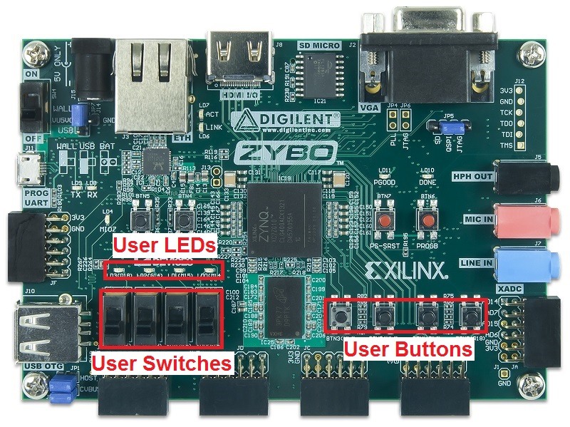

Zynq A9 programming in Python¶
Table of Contents
We show here some more examples of how to program the Xilinx Zynq 7010 APSoC on ZYBO using MicroPython. The first set of examples run exclusively on the ARM Cortex-A9 processor. These examples, which are based on calculating the factors and primes of integer numbers, give us a sense of the performance available with MicroPython running on a 650MHz Cortex-A9.
The second set of examples show how easy it is to program the A9 to control peripherals on the board. The peripherals are interfaced to the processor by circuits in the programmable logic. Together, the examples show how MicroPython implements a very substantial subset of the core Python capabilities. They also demonstrate the power of the MicroPython REPL, as a an interpreted interface to Zynq.
The factors_and_primes module¶
The factors_and_primes module can be found in the pyxi.examples package. It contains some sample functions to calculate the factors and primes of integers. We will use three functions from the factors_and_primes module to demonstrate programming the ARM A9 CPU with MicroPython.
factorize(n):: Calculate all factors of integer n primes_between(interval_min, interval_max):: Find all primes in the interval defined by interval_min, interval_max print_ints_with_most_factors(interval_min, interval_max):: Reports integers with most factors in a given integer range
Let’s start by importing the factors_and_primes module as fp.
>>> from examples import factors_and_primes as fp
Next we will call the factorize() function to calculate the factors of an integer.
factorize()
>>> fp.factorize(1066)
[1, 2, 13, 26, 41, 82, 533, 1066]
The primes_between() function can tell us how many prime numbers there are in an integer range. Let’s try it for the interval 1 through 1066.
primes_between()
>>> fp.primes_between(1, 1066)
[1, 2, 3, 5, 7, 11, 13, 17, 19, 23, 29, 31, 37, 41, 43, 47, 53, 59, 61, 67, 71, 73, 79, 83, 89, 97, 101, 103, 107, 109, 113, 127, 131, 137, 139, 149, 151, 157, 163, 167, 173, 179, 181, 191, 193, 197, 199, 211, 223, 227, 229, 233, 239, 241, 251, 257, 263, 269, 271, 277, 281, 283, 293, 307, 311, 313, 317, 331, 337, 347, 349, 353, 359, 367, 373, 379, 383, 389, 397, 401, 409, 419, 421, 431, 433, 439, 443, 449, 457, 461, 463, 467, 479, 487, 491, 499, 503, 509, 521, 523, 541, 547, 557, 563, 569, 571, 577, 587, 593, 599, 601, 607, 613, 617, 619, 631, 641, 643, 647, 653, 659, 661, 673, 677, 683, 691, 701, 709, 719, 727, 733, 739, 743, 751, 757, 761, 769, 773, 787, 797, 809, 811, 821, 823, 827, 829, 839, 853, 857, 859, 863, 877, 881, 883, 887, 907, 911, 919, 929, 937, 941, 947, 953, 967, 971, 977, 983, 991, 997, 1009, 1013, 1019, 1021, 1031, 1033, 1039, 1049, 1051, 1061, 1063]
The answer is quite a few! We can use one of Python’s built-in methods len() to count them all.
Using built-in functions¶
We can use one of Python’s built-in methods len() to count them the primes.
len()
>>> len(fp.primes_between(1, 1066))
180
And we can combine len() with another built-in method, sum(), to calculate the average of the 180 prime numbers.
sum()
>>> primes_1066 = fp.primes_between(1, 1066)
>>> sum(primes_1066) / len(primes_1066)
486.2056
This result makes sense intuitively because prime numbers are known to become less frequent for larger number intervals. These examples demonstrate how Python treats functions as first-class objects so that functions may be passed as parameters to other functions. This is a key property of functional programming and demonstrates the power of Python (and MicroPython).
We can use list comprehensions (a ‘Pythonic’ form of the map-filter-reduce template) to ‘mine’ the factors of 1066 to find those factors that end in the digit ‘3’.
str(), endswith()
>>> [x for x in fp.primes_between(1, 1066) if str(x).endswith('3')]
[3, 13, 23, 43, 53, 73, 83, 103, 113, 163, 173, 193, 223, 233, 263, 283, 293, 313, 353, 373, 383, 433, 443, 463, 503, 523, 563, 593, 613, 643, 653, 673, 683, 733, 743, 773, 823, 853, 863, 883, 953, 983, 1013, 1033, 1063]
This code tells MicroPython to first convert each prime between 1 and 1066 to a string and then to return those nu mbers whose string representation end with the number ‘3’. It uses the built-in str() and endswith() me thods to test each prime for inclusion in the list. A list of Python’s b
And because we really want to know what fraction of the 180 primes of 1066 end in a ‘3’, we can calculate ...
len(), str(), endswith()
>>> primes_1066 = fp.primes_between(1, 1066)
>>> len([x for x in primes_1066 if str(x).endswith('3')]) / len(primes_1066)
0.25
These examples demonstrate how Python is a modern, multi-paradigmatic language. More simply, it continually integrates the best features of other leading languages, including functional programming constructs. Consider how many lines of code you would need to implement the list comprehension above in C and you get an appreciation of the power of productivity-layer languages. Higher levels of programming abstraction really do result in higher programm er productivity!
More intensive calculations¶
To stress the A9 a little more, we will run a script to determine the integer number, or numbers, that have the most factors between 1 and 1066, using the print_ints_with_most_factors() function from the factors_and_primes module.
print_ints_with_most_factors()
>>> fp.print_ints_with_most_factors(1, 1066 )
Between 1 and 1066 the number/s with the most factors:
840 ... with the following 32 factors:
[1, 2, 3, 4, 5, 6, 7, 8, 10, 12, 14, 15, 20, 21, 24, 28, 30, 35, 40, 42, 56, 60, 70, 84, 105, 120, 140, 168, 210, 280, 420, 840]
The prime number factors of 840 are: [1, 2, 3, 5, 7]
The A9 remains quite responsive. Running this for much larger numbers, say 50,000, will demonstrate noticeably slower responses as we would expect.
The source code for the functions above is available in the file examples/factors_and_primes.py Reviewing the code wil l give you a better appreciation for the power of MicroPython both in terms of Python language covera ge and performance.
Programming on-board IO¶
LEDs, switches and buttons¶
ZYBO has four LEDs, four slide-switches and four push-buttons that are connected to the Zynq’s programmable logic. These are highlighted in the photo of the ZYBO blow.
{kind=link}
(Note that two additional push-buttons and 1 LED are connected directly to ZYBO’s processor system via memory IO pins. These are not highlighted in the figure and we will ignore them for now.)
Each of the three banks of 4 IO devices can be controlled from Python. To demonstrate this, we first import the LED, Switch and Button classes from the module pyxi.board
# Import libraries
>>> from pyxi.board import LED, Switch, Button
Controlling a single LED¶
Now we can instantiate instances of each of these classes and invoke their methods to manipulate them. Let’s start by instantiating a single LED and turning it on and off.
>>> led0 = LED(0)
>>> led0.on()
>>> led0.off()
Let’s toggle led0 ten times. We need to import the delay() method from the board module to allow us to see the led flashing. A delay argument of 1 second is sufficient.
>>> from pyxi.board import LED, Switch, Button, delay
>>> led0 = LED(0)
>>> for i in range(20):
... led0.toggle()
... delay(1)
Controlling all the LEDs, switches and buttons¶
Next we create an example that uses the 4 LEDs, 4 slide-switches and 4 push-buttons. The script begins by turning all 4 LEDs off. Then it samples the state of each of the 4 slide-switches and for any switch that is on, it lights the corresponding LED. Finally, it checks the state of each of the 4 push-buttons and toggles the state of the corresponding LED.
from pyxi.board import LED, Switch, Button
MAX_LEDS = 4
MAX_SWITCHES = 4
MAX_BUTTONS = 4
# Create lists for each of the IO component groups
leds = [LED(i) for i in range(MAX_LEDS)] # (1)
switches = [Switch(i) for i in range(MAX_SWITCHES)]
buttons = [Button(i) for i in range(MAX_BUTTONS)]
# LEDs start in the off state
for led in leds:
led.off()
# if a slide-switch is on, light the corresponding LED
for i, switch in enumerate(switches): # (2)
if switch.read(): # (3)
leds[i].on()
else:
leds[i].off()
# if a button is depressed, toggle the state of the corresponding LED
for i, button in enumerate(buttons):
if button.read():
leds[i].toggle()
- The script uses list comprehensions to create 3 separate lists, called leds, switches and buttons, for the respective banks of IO components +
- It then calls the built-in Python function, enumerate(), to access the index of a switch element, and the element itself, on each iteration through the loop +
- The script invokes the read() method of a switch element to sample the state of the switch which is then transferred to the corresponding LED using the element index.
Summary¶
We have used MicroPython to execute scripts that target both the PS and PL subsystems of Zynq. Having established this core functionality, we are ready to extend our horizons by introducing more advanced features of overlays. In the next section we will describe the PModIO overlay and demonstrate how to program it.